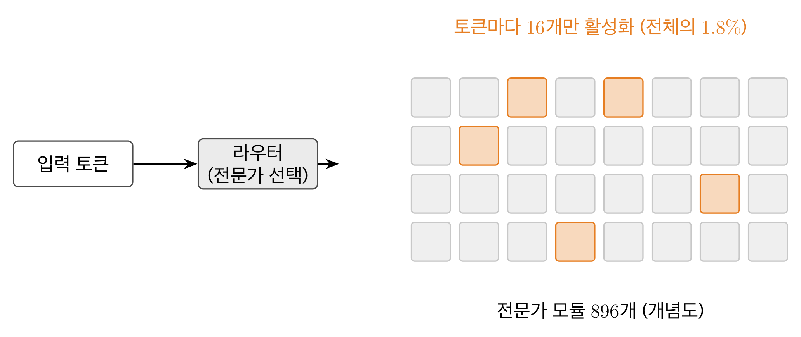
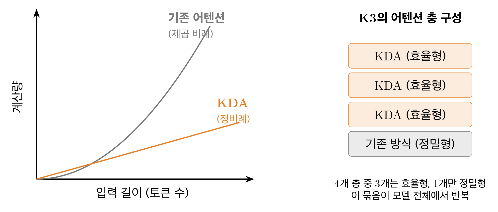

A Second DeepSeek? A Different Kind of Shock
If DeepSeek's arrival in early 2025 was a cost shock — "frontier AI can be built this cheaply" — then Kimi K3, released by China's Moonshot AI in July 2026, delivers a different kind of shock: openness. A model approaching top US frontier performance was released in a form anyone can download and run.
Markets reacted immediately — the Nasdaq dipped roughly 1% and semiconductor stocks sold off after the announcement. Nature reported that some academics are calling it a "Sputnik moment."
What "Open-Weight" Means
The key distinction is whether you can download the model weights. Closed models keep weights private; users can only call an API. Open-weight models publish the weight files, so anyone can download them, run them on their own infrastructure, or fine-tune them. Note that open-weight is not the same as open-source — training data and the full development process are not disclosed.

Core Technology: Three Ways of Saving Compute at Once
K3's novelty is not any single new technique, but pulling off multiple compute-saving choices simultaneously at frontier scale. US semiconductor export controls limit Chinese firms' access to the latest GPUs. If you cannot buy more compute, you must extract more from the same compute — K3's entire design is that answer. "Scarcity bred invention," as academics have put it.
Stable LatentMoE — 2.8T parameters, but never all at once
The model contains 896 expert modules; each token activates only the 16 most relevant — about 1.8% of total parameters, the lowest activation ratio in the industry. Total parameters approximate the model's knowledge capacity; active parameters approximate the cost of each response.
Kimi Delta Attention — processing long inputs cheaply
Conventional attention scales quadratically: 10× longer input means 100× more compute. K3 applies linear attention (KDA) to three-quarters of its attention layers, making compute scale proportionally with input length. It is the first case demonstrating that linear attention works without quality loss at frontier scale — the structural basis for its low-cost 1M-token context.
MXFP4 — trained in 4-bit from the start
Most models train at high precision and compress (quantize) just before deployment, losing quality in the process. K3 trains with 4-bit precision as a premise, so deployment-time quality loss is minimal and it runs more easily on memory-constrained hardware.


Performance: Not "Ahead of the US," but Firmly in the Race
K3 scores 57 on the Artificial Analysis Intelligence Index — third overall, behind Claude Fable 5 (60) and GPT-5.6 Sol (59), but ahead of Claude Opus 4.8 (56) and GPT-5.5. No open-weight model has ever placed this high.
Caveats apply: the developer's showcase demos (24-hour autonomous code optimization, a small AI chip designed in 48 hours) are curated; output speed is a sluggish ~40 tokens/second; and Moonshot itself admits a noticeable user-experience gap versus top closed models. The claim "China has surpassed US AI" is premature — but "an open model has entered the top tier" is supported by multiple independent evaluations.
The "Free to Use" Illusion: The Self-Hosting Wall
Open weights do not make operation easy. K3's weight file is roughly 1.56TB even in its most compressed 4-bit form — too large for even NVIDIA's latest 8-GPU DGX B200 server. Moonshot recommends supernode environments of 64+ accelerators for efficient serving.
| GPU configuration | Total memory | Can run K3? | Hourly cost |
|---|---|---|---|
| H100 × 8 | 0.64 TB | No | $42 |
| H200 × 8 | 1.13 TB | No | $55 |
| B200 × 8 | 1.44 TB | Effectively no | $99 |
| B300 × 8 | 2.30 TB | Minimum viable | $112 |
| B300 × 64 | 18.4 TB | Recommended | $899 |
On-demand per-GPU pricing from major cloud providers as of July 2026. Long-term commitments reduce rates by 30–60%.
At $899/hour for the recommended configuration, the realistic path for most enterprises is not self-hosting but buying tokens from cloud or specialized inference providers hosting K3.
The Paradox of Paying for a Free Model
To be clear: if you download the weights and run them on your own infrastructure, you owe Moonshot nothing. Per-token pricing applies only when using Moonshot's hosted API — at roughly half the rate of GPT-5.6 Sol and a third of Claude Fable 5 for equivalent workloads.
But cheap unit prices do not guarantee cheap total costs. K3 reasons through long internal deliberation, which is also billed as tokens, so it consumes more tokens per task than competitors. Adoption decisions should compare total cost of ownership per completed task, not token prices. In Artificial Analysis's measurements, K3's cost per evaluation task ($0.95) was nearly identical to the higher-priced GPT-5.6 Sol ($1.04).
The Bigger Picture — Better Open Weights, Bigger Compute Market
The model is free, but running it is not. As open-weight models improve, the point of monetization shifts from model sales to GPU infrastructure, hosting, and operations. Rising performance raises the infrastructure bar — K3 is the first open model demanding the latest 288GB-class GPUs — and only cloud providers can own and operate that at scale.
The gap between fixed self-hosting costs and per-token pricing creates space for specialized intermediaries, and calculating which side of the API-vs-self-hosting break-even point your workload falls on becomes homework for every adopting enterprise.
Where Open Weights Win Despite the Performance Gap
The practical question is not "which model is smartest" but "which model is good enough while satisfying my constraints." Open weights hold structural advantages in specific territories:
Workloads where data cannot leave
Medical records, financial transactions, defense and public-sector data — where external API calls are impossible, "can it run on our infrastructure" is the first gate, and open weights are effectively the only option.
High-volume, repetitive task optimization
Document classification, summarization, data extraction — low difficulty, high volume. Using a top-tier model is over-investment; "good enough" open weights lower unit costs.
Domains where fine-tuning flips the gap
Legal documents, internal codebases, industry terminology — a fine-tuned open-weight model can outperform a general-purpose frontier model. An option that only weight access unlocks.
Tiered architectures and vendor-risk hedging
Route most requests to low-cost open weights and escalate only hard cases to closed frontier models. Also insurance against single-vendor dependency and access-cutoff risk.
Conclusion: The Axis of Competition Shifts from Models to Ecosystems
K3's bigger question is about industry structure, not technology. As top-tier performance arrives in open form at lower prices, competition broadens from model performance alone to who provides the environment that more enterprises and developers choose and can operate. The more models open up, the more value migrates from model sales to infrastructure, hosting, and operations. What grows as open weights improve is not the model market — it is the compute market.
Kimi K3 is not a story of "China beating America." It means enterprises adopting AI have more choices — and must now build their own criteria for choosing what fits their workloads.
Related Articles
TurboQuant — Rewriting the Equation of AI Memory Harness Engineering — Systems, Not Models, Make AgentsNeed a talk, article, or advisory on this topic?
I deliver executive keynotes, contribute industry reports, and advise on AI strategy.
Get in Touch